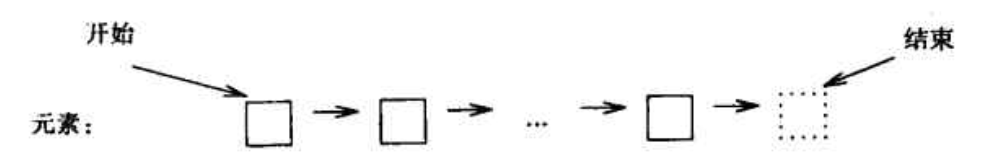

通用型算法
C++标准库提供了各种各样的容器，用户也可以自己写出这类东西。由此我们发现，可以进一步利用通用型程序设计范型，用容器对算法进行参数化。举例来说，我们希望能去排序、复制、检索vector、list或者数组，而不必对每种容器写出一套特殊的sort()、copy()和search()函数。我们当然也不希望将它们都转换到某个排序函数能够接受的特定类型。因此，我们就必须找到一种一般性的方式来定义自己的容器类，以使我们能操纵一个容器，而又不必确切地知道它到底是哪种容器。
有一种方式，也是C++标准库的容器类和非数值算法所采用的方式，是将注意力集中到序列和通过迭代器操作序列的观念。
下面是序列概念的一个图示

一个序列有一个开始和一个结束。一个迭代器引用着一个元素，并提供一种操作，通过它可以使迭代器转而去引用序列中的下一个元素。序列结束也是一个迭代器，它引用的是超出序列最后元素一个位置的地方。这种“结束”的物理表示可能是一个特殊的哨兵元素，但也不一定非要这样做。事实上，最重要的论点是，这种序列的概念包容了范围广泛多样的许多表示形式，包括表和数组等。
我们需要一些标准的操作概念，例如“通过迭代器去访问元素”和“让这个迭代器去引用下一个元素”等。一种明显的选择（如果你理解这里的想法）是用间接运算符 * 表示“通过迭代器访问元素”，用增量运算符++表示“让这个迭代器去引用下一个元素”。
有了这些，我们就可以写出类似下面这样的代码：
template<class In, class Out> void copy(In from, In too_far, Out to)
{
while(from != too_far)
{
*to = *from; // 复制被索引的元素
++to; // 下一个输出
++from; // 下一个输入
}
}
这样就可以复制任何容器，只要我们按正确的语法和语义为之定义了迭代器。
C++内部的、低级的数组和指针类型也有对应于这些的正确操作，因此我们可以写出如下代码：
char vc1[200]; // 200个字符的数组
char vc2[500]; // 500个字符的数组
void f()
{
copy(&vc1[0], &vc1[200], &vc2[0]);
}
这将把vc1中从第一个到最后一个的元素复制到vc2，从vc2的第一元素开始放。
所有的标准容器都支持这种迭代器和序列的概念。
这里用了两个模板参数In和Out表示复制的源和目标的类型，而不是只用一个参数。这是因为我们常常希望从一类容器复制到另一类容器。例如，
complex ac[200];
void g(vector<complex>& vc, list<complex>& lc)
{
copy(&ac[0], &ac[200], lc.begin());
copy(lc.begin(), lc.end(), vc.begin());
}
这里从数组复制到表，而后从表复制到vector。对于标准容器而言，begin()就是一个迭代器，它指向容器的第一个元素。
🔚